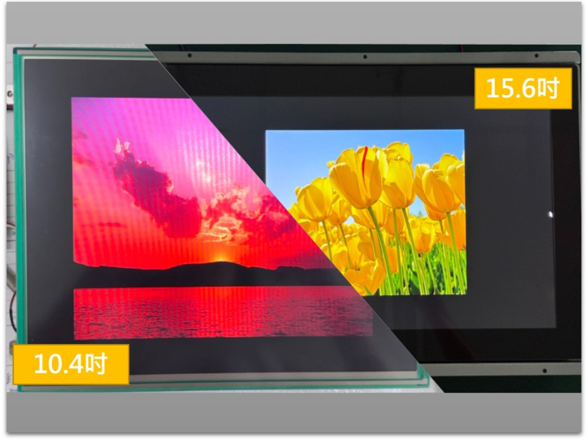
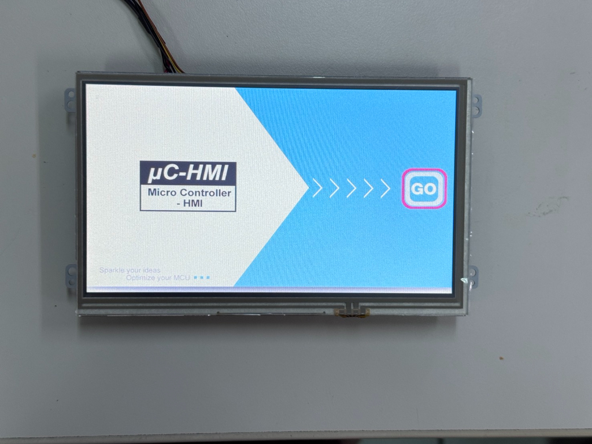
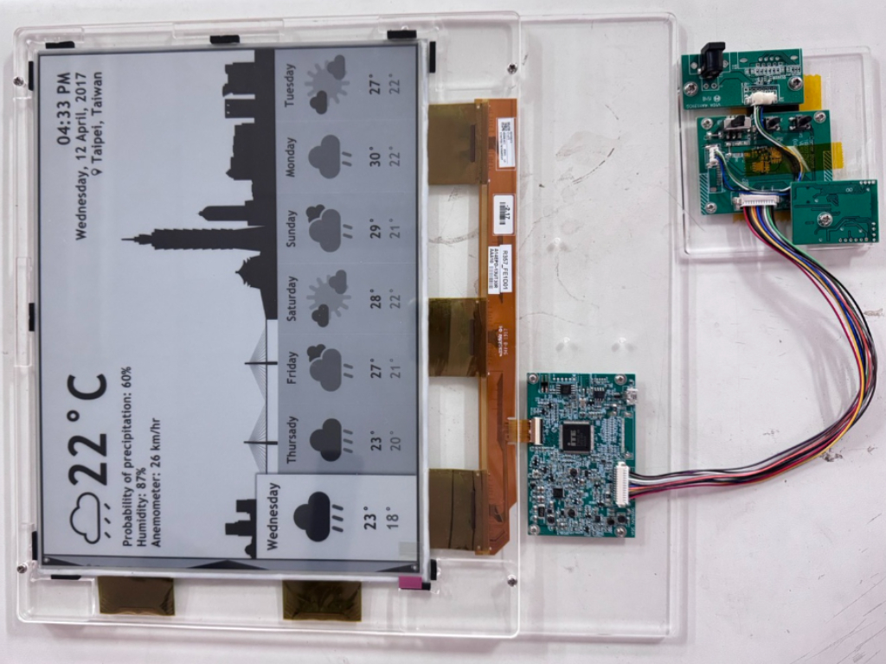
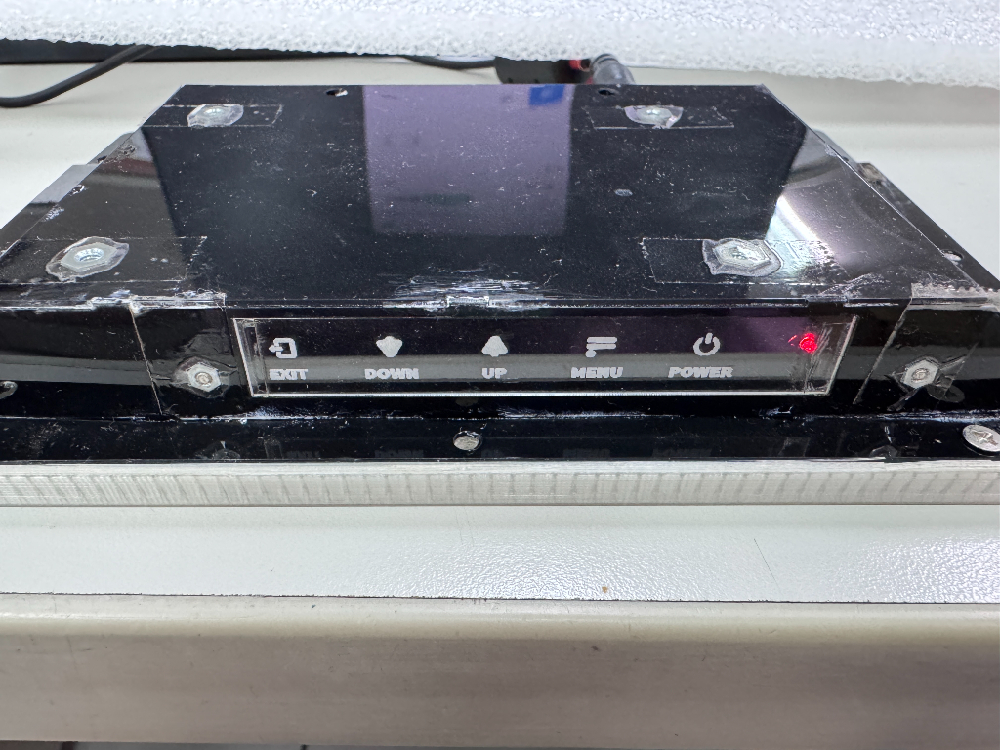
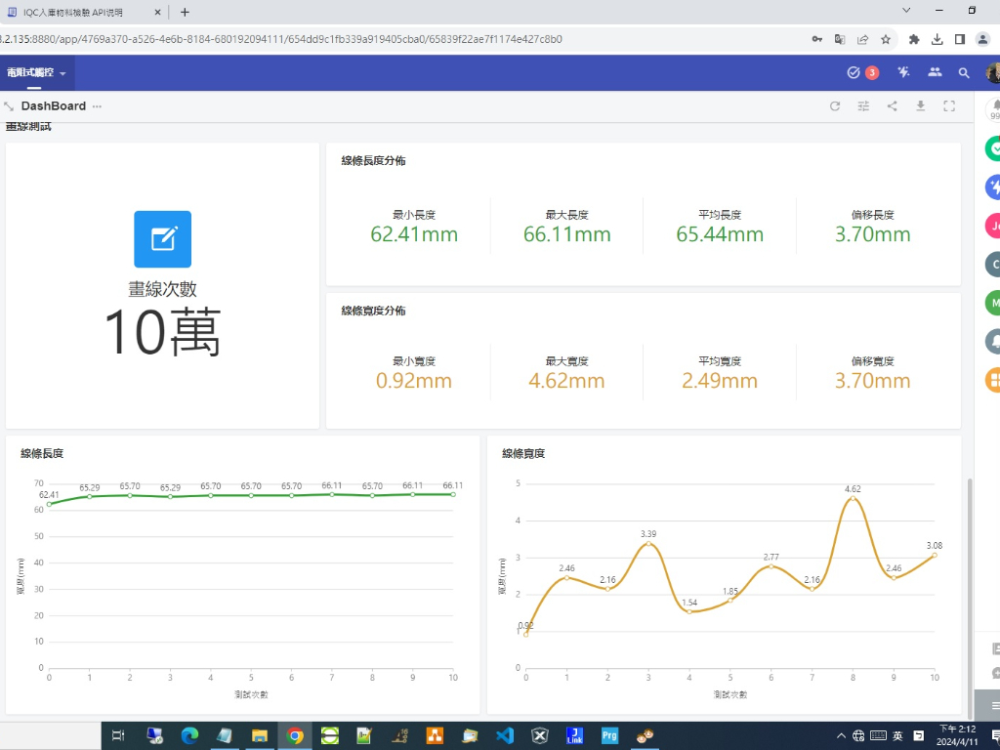
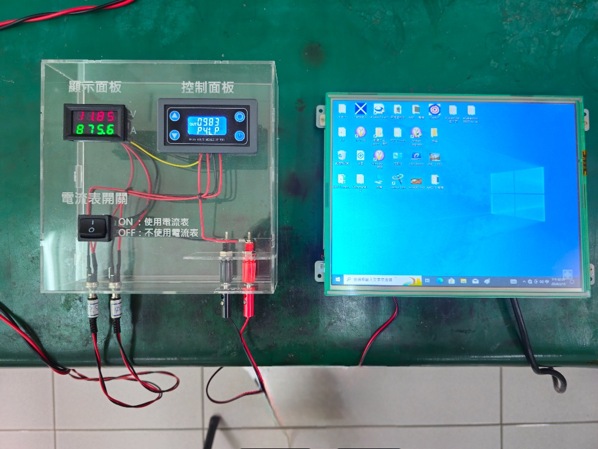

關於我 About
邱聖貴 Willy
你好，我是邱聖貴，喜歡在溝通時提出想法，確保達成共識並避免重工問題。在執行任務時，我會依據優先度、困難度、效益與投入時間進行評估與安排，以此來提高工作效率。
我有近3年工作經驗的硬體工程師，熟悉自動販賣機、TFT/HMI顯示模組產品。擅長維修分析不良品、sch & layout 檢查與修改、電路板焊接驗證除錯，並且參與過新產品從設
計到量產整個過程，同時具備撰寫韌體程式與物聯網系統開發能力。
- 年齡: 29
- 居住: 彰化縣彰化市
- 手機: 0978-851303
- 信箱: sa6549872000@gmail.com
履歷 Resume
學歷
建國科技大學，電子工程系，學士，2014/9 - 2018/6
- 在校成績 - 大學畢業成績全班第三名
- 專題製作 - 智慧手機連網控制家電應用
- 負責作品製作及程式撰寫
- 校外競賽
- 參加「2016年全國自走車競速大賽」獲得佳作
- 參加「2016年創客智慧機器人全國賽」獲得冠軍
- 參加「2017年全國微電腦應用系統設計創作」獲得佳作
- 專業證照
- 乙級數位電子技術士
- 丙級工業電子技術士
- 丙級電腦硬體裝修技術士
- 丙級電腦軟體應用技術士
經歷
硬體工程師，豐裕科技股份有限公司，2021/10 - 2024/4
台中市南區
- 參與新產品從設計到量產整個過程
- 協助工程師 sch & layout 檢查與修改
- 不良品維修分析
- 減少RTP入庫不良率
- 測試程式及治具製作
- 替代料尋找、申樣、驗證
實習生，金雨企業股份有限公司，2018/3 - 2018/6
彰化縣彰化市
- 協助工程師測試自販機功能
- 自販機治具製作
- PCBA板焊接
技能 Skills

硬體專長
- DIP、SMD、BGA零件焊接
- PCBA測試驗證除錯
- sch & layout 檢查與修改
- 訊號量測分析
- 不良品維修分析

韌體專長
- 單晶片程式撰寫
- 串接物聯網API
- 測試程式撰寫

工具
- 焊接 - 電烙鐵、熱風槍
- 儀器 - 三用電表、示波器、電源供應器
- 軟體 - Altium
- IDE - Arduino IDE、Keil C、MpLab、IAR
專案與作品 Portfolio

TFT-LCD顯示模組
參與TFT-LCD產品從設計到量產整個過程，負責進行EVT、DVT、PVT三個階段的相關作業，協助10.4吋與15.6吋產品順利量產，主要工作內容如下：
- 電路板焊接驗證除錯、sch & layout 檢查與修改、功能性測試、組裝工程樣品
- 可靠性測試、ESD/EFT測試、樣品驗證除錯
- 生產資料建立、指導產線生產作業、確認生產模組正確性

HMI顯示模組
參與HMI新產品工程驗證階段，協助工程師進行電路板焊接驗證除錯、sch & layout 檢查與修改、組裝工程樣品、功能性/可靠性/耐久性測試，並確保樣品動作正常。

電子紙顯示結合物聯網通訊技術
協助工程師分析E-paper畫面閃爍問題，針對電池、電源供應器、行動電源量測電壓電流，比較不同類型電源的inrush，並將結果回報給以供問題排除。

OSD電容式控制按鍵
與機構、美工、Layout人員合作設計一個電容式控制按鍵，替代原有機械式控制按鍵，並試用在7吋TFT-LCD顯示模組上，評估電容式按鍵導入之可行性。

RTP測試程式
用C#撰寫一個測試程式，將RTP耐久性測試資料數據化，串接廠內物聯網平台，並在平台上建立物料品質資料庫，提供人員比較樣品、入庫品與其他廠牌之品質。

開關機治具
整合開關機模組、電壓電流表與其他電子零件安裝於壓克力外殼上，製作出5台開關機測試治具，解決廠內開關機設備不足問題。